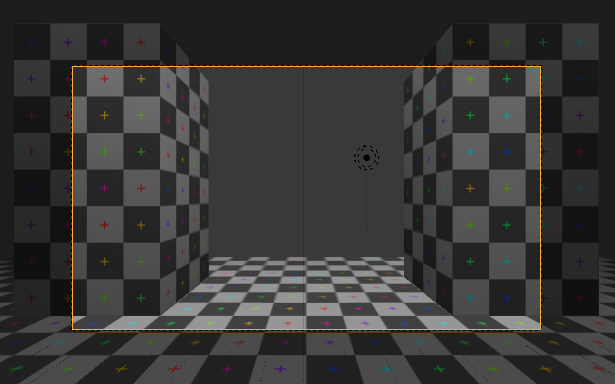
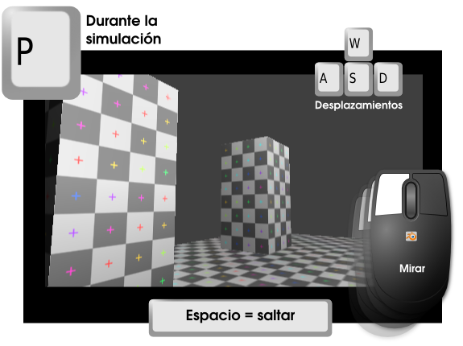
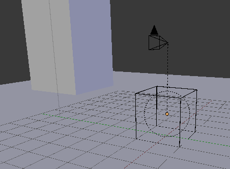

CameraFPS
Un poco de Historia
Gracias a las aportaciones de programadores que ceden códigos bajo licencias como Creative Commons disfrutamos de un archivo como CameraFPS que incluye una cámara completamente interactiva para recorrer un espacio arquitectónico.
El código original MouseLook fue escrito por Clarck Thames y publicado con licencia CC-BY-3.0. En realidad es el resultado de un magnífico tutorial suyo en el que explica paso a paso cómo se programa el efecto. En este momento la cámara lo único que hace es obedecer el movimiento del ratón originando la sensación de cabeceo del jugador. Esta acción es en realidad la que se conoce en el mundo de los videojuegos como mouselook (mirar con el ratón).
El testigo lo recoge Pelle Johnsen y publica FPSController también con CC-BY-3.0. En esencia es una mejora de MouseLook al que le añade controles para desplazar la cámara. FPS (First Person Shooter) hace referencia a los videojuegos en primera persona donde la cámara representa al jugador y, por norma general, incorporan el efecto mouselook; esto hace que el personaje sea controlado con las dos manos:
- Izquierda. Para desplazamientos adelante-atrás-derecha-izquierda.
- Ratón. Para mirar arriba-abajo-derecha-izquierda. Si el acto de mirar se hace mientras hay un desplazamiento, entonces hay un giro del personaje.
Posteriormente Rafael Ángel López García hizo añadidos a la configuraión logrando una interactuación más confortable que la de FPSController; el resultado se llama CameraFPS y, por supuesto, continúa con la licencia de siempre.
CameraFPS es un .blend que se abre como cualquier otro, y esto es lo que muestra en el editor Vista 3D (desde el punto de vista de la cámara).
Entramos al juego ("P") y usamos los siguientes controladores:
- Tecla "W". Adelante.
- Tecla "S". Atrás.
- Tecla "A". Izquierda.
- Tecla "D". Derecha.
- Tecla "Espacio". Salto.
- Movimiento del ratón con botón izquierdo pulsado. Mirar arriba, abajo, derecha e izquierda. Tal y como se dijo antes, si el acto de mirar se hace mientras hay un desplazamiento, entonces hay un giro de la cámara.
- Tecla "Esc". Sale del juego.

No nos vamos a detener a estudiar cuál es el proceso para crear el artilugio que consigue ese comportamiento de la cámara, pero sí haremos una breve descripción.
Ya en sombreado Sólido y en el editor Vista 3D, si salimos del punto de vista de la cámara, esto es lo que hay.
- Un suelo. Nada sorprendente; lo único que nos puede llamar la atención es esa textura cuadriculada que tiene asignada y que se veía en sombreado Textura. No le damos mayor importancia porque es sólo para hacer más comprensible la experiencia de desplazarse con CameraFPS.
- Unas cuantas lámparas.
- Un cubo. Este objeto es el que está programado para desplazarse mientras arrastra consigo a la cámara ya que tienen una relación de parentesco.
- Una cámara. Asociada, como hemos dicho, al cubo. Esta cámara es la que tiene la programación para los movimientos de cabeceo.